{kind=link}
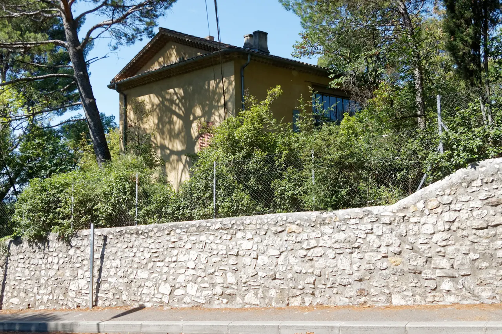
Atelier des Lauves
폴 세잔이 생의 마지막 4년(1902–1906) 동안 매일 그림을 그렸던 언덕 위 아틀리에. 북향 채광창, 대형 캔버스용 벽 슬릿, 정물화에 등장했던 올리브 단지와 해골이 그대로 보존된 근대 미술의 성지.
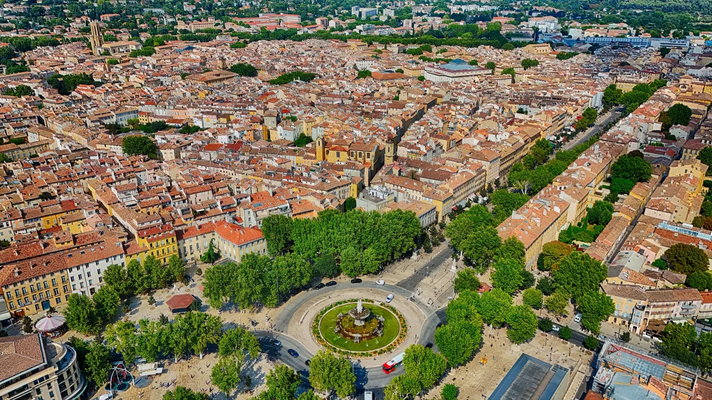
| 항목 | 평가 |
|---|---|
| 여행 적합도 | ★★★★★ Jason·Julia의 생활형 여행에 최적화 |
| 예산 체감 | 중상 |
| 일정 강도 | 보통, Marseille day만 높음 |
| 예약 핵심 | 숙소주차·Atelier·Mucem·Aix–Marseille 교통 확인 |
| 우천 전환 | Mucem 실내 비중 확대, Le Panier 축소 |
여행의 역할: Nice 5박 뒤 프로방스 내륙의 생활 리듬으로 전환하는 4박 거점이다. 엑상은 시장·세잔을 도보로 보고, Day 14에는 Cassis를 차량으로, Day 15에는 Marseille를 TER로 다녀온다.
여행자 기준: Julia의 수영은 선택 일정이며 숙소 선정조건으로 사용하지 않는다. 아침은 숙소, 점심은 샌드위치·시장·가벼운 현지식, 저녁은 레스토랑을 기본으로 한다. Day 15는 Marseille 전일 당일치기에 집중한다.
| 장소·경험 | 판단 | 이유 |
|---|---|---|
| Sainte-Victoire 장거리 하이킹 | 비추천 | 4박 일정에서 더위·산불·보행 피로 대비 효율 낮음 |
| Aix에서 Arles 추가 | 제외 | Arles는 9/19 Avignon 기본 당일치기로 배정되어 중복 이동하지 않음 |
| Saint-Tropez | 비추천 | 이동·정체 대비 프로젝트 취향과 밀도 낮음 |
엑상의 단정한 시장도시와 마르세유의 다층적인 항구도시를 대비한다. Marseille에서는 Vieux-Port–Le Panier–Mucem–Fort Saint-Jean만 이어 과밀을 피한다. Cassis와 Marseille를 같은 날 결합하지 않는다.
Day 16은 엑상 체크아웃 후 뤼베롱 농가로 들어가는 이동일이다. 경유지 이상으로 늘리지 않는다.
| Cours Mirabeau·Vieil Aix | 필수 | 시장·광장·분수·생활이 연결된 도시 핵심 |
| Place Richelme 시장 | 필수 | 숙소 식사와 프로방스 식재료를 연결 |
| Musée Granet | 필수 | Cézanne·프로방스 미술과 2026 특별전 |
| Atelier des Lauves | 필수 | 세잔의 작업환경과 말년 작품을 구체적으로 이해 |
| Quartier Mazarin | 우선 추천 | 과밀하지 않은 건축 산책과 Granet 동선 |
| Marseille Mucem·Fort Saint-Jean | 필수 | 내륙 프로방스와 항구대도시의 대비 |
| Cassis·Calanques | 필수 | Day 14 차량 당일치기; 보트는 기상·화재통제에 따라 조정 |
| Terrain des Peintres | 우선 추천 | Jason 스케치와 Cézanne의 시점 연결 |
| Bastide du Jas de Bouffan | 선택 | 세잔의 가족사·초기작 관심이 클 때 |
| Bibémus quarries | 선택 | 채석장 형태와 후기회화 관계, 가이드 언어 제약 |
| Cathédrale Saint-Sauveur | 선택 | 여러 시대 건축이 겹친 성당, 일정 과밀 시 외관 |
| Fondation Vasarely | 선택 | 옵아트·현대건축 선호 시 Cassis 우천대체 |
첫 내륙 구간이다. Barcelona부터 Nice까지 11일이 전부 해안이었다. 엑상은 바다에서 30km 안쪽이고, 여기서부터 Lyon까지 15일이 내륙이다.
세잔은 이 도시에서 태어나 이 도시에서 죽었다. Day 13에 어린 시절 살던 집 앞과 마지막 작업실을 같은 도보 일정으로 잇는다.
그리고 2026년은 세잔 사후 120주년이다. 평소 닫혀 있던 자스 드 부팡과 로브 아틀리에가 7월 4일–10월 31일에만 열린다. 이 여행의 날짜가 그 안에 들어간다. 우연이지만 활용하지 않을 이유가 없다.
9/9 Nice에서 Saint-Paul·Grasse 경유 → Aix 체크인·주차·장보기
↓
9/10 시장·Vieil Aix·Musée Granet — 도시와 미술
↓
9/11 Cassis — 유람선·항구·Port-Miou
9/12 Marseille — Vieux-Port·Le Panier·Mucem·Notre-Dame de la Garde
↓
9/13 Lourmarin 경유 → Luberon 농가
| Day | 날짜 | 점심 | 저녁 |
|---|---|---|---|
| 12 | 9/9 수 | 이동 중 (그라스 인근) | 엑상 도착 후 가벼운 한 끼 |
| 13 | 9/10 목 | 시장에서 조달 | 구시가지 식당 |
| 14 | 9/11 금 | Cassis 생선·지중해식 점심 | 엑상 복귀 후 가볍게 |
| 15 | 9/12 토 | Marseille panisse·항구 점심 | 귀환 TER 전 과식하지 않음 |
| 16 | 9/13 일 | 뤼베롱 이동 중 | 농가 |
Day 12 저녁에 야심을 부리지 마라. 니스에서 차를 받아 두 곳을 경유해 도착하는 날이다. 숙소 근처로 정한다.

폴 세잔이 생의 마지막 4년(1902–1906) 동안 매일 그림을 그렸던 언덕 위 아틀리에. 북향 채광창, 대형 캔버스용 벽 슬릿, 정물화에 등장했던 올리브 단지와 해골이 그대로 보존된 근대 미술의 성지.
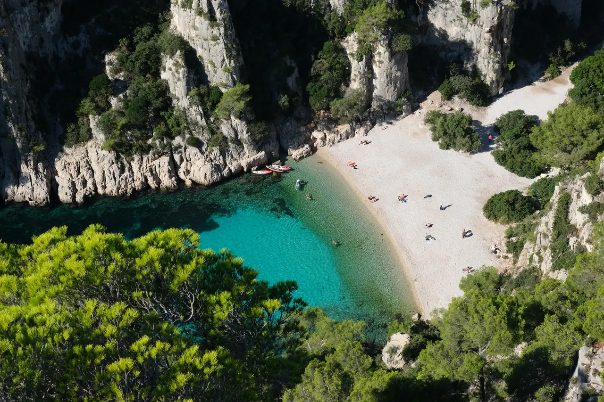
마르세유와 카시스 사이에 걸쳐 20km에 걸쳐 펼쳐진 유럽 유일의 지중해 연안 국립공원. 에메랄드빛 바다로 수직 낙하하는 백색 석회암 피오르 협만들의 장관.
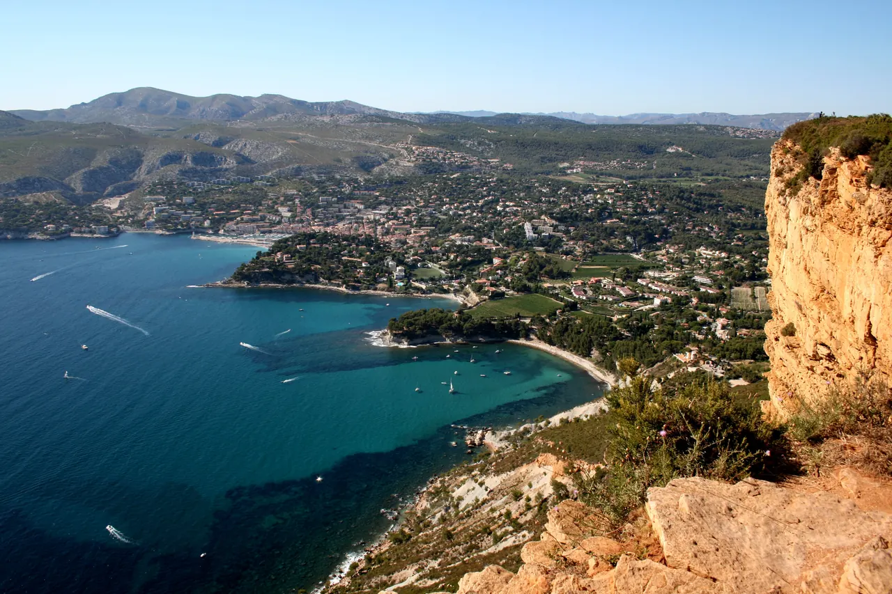
유럽 최고 높이의 해안 절벽 캅 카나유(Cap Canaille) 아래 자리한 아늑한 지중해 어항. 파스텔톤 가옥, 칼랑크 국립공원 유람선 출발지, 유서 깊은 카시스 화이트 와인(AOC Cassis)의 고향.
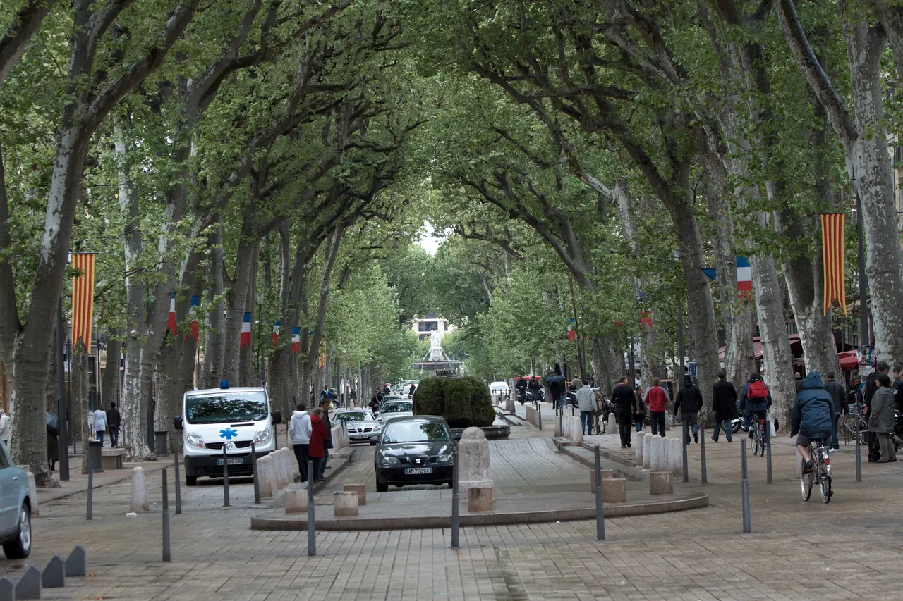
1651년 옛 성벽 자리에 조성된 440m의 플라타너스 가로수길. 북쪽의 활기찬 카페와 남쪽의 고요한 17세기 귀족 저택, 4개의 유서 깊은 분수가 관통하는 엑상프로방스의 심장.
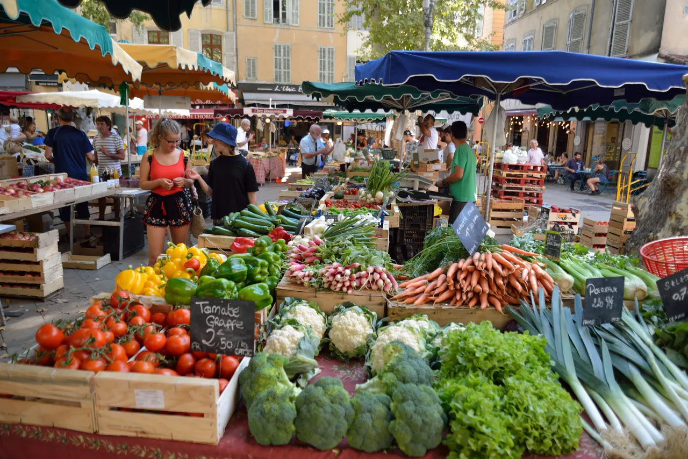
리셸므 광장에서 매일 아침 열리는 오감의 로컬 식료품 시장과, 화·목·토 대규모로 확장되는 프레셰르 광장의 프로방스 전통 종합 시장.
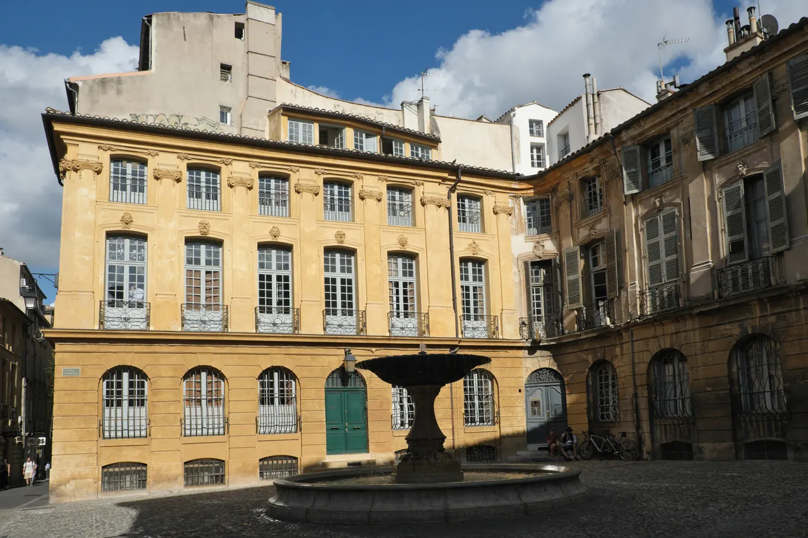
로마 온천 도시 위에 17~18세기 프로방스 귀족 저택과 바로크 분수, 5세기 고대 세례당을 품은 생소뵈르 대성당이 어우러진 우아한 미로 구시가지.
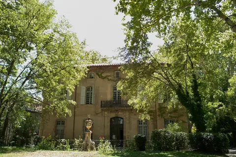
폴 세잔이 20세부터 60세까지 40년간 머물며 화가로 성장했던 가문의 여름 저택. 살롱의 초기 벽화, 마로니에 가로수길, 분수 연못, 그리고 화가가 최초로 생트 빅투아르 산을 그렸던 역사적 현장.
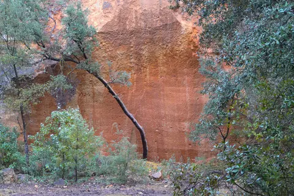
엑상프로방스 건축물의 황금빛 사암을 공급하던 고대·중세 채석장. 직각으로 깎인 붉은 사암 절벽과 소나무 숲 사이에서 세잔이 큐비즘의 기하학적 구도를 태동시켰던 야외 작업장.
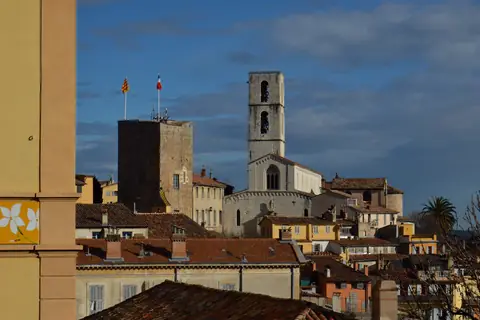
16세기 가죽 향장갑에서 출발해 500년 전통을 이어온 세계 향수 산업의 수도. 프라고나르(Fragonard) 유서 깊은 공장과 국제 향수 박물관이 자리한 프로방스 내륙 언덕 도시.
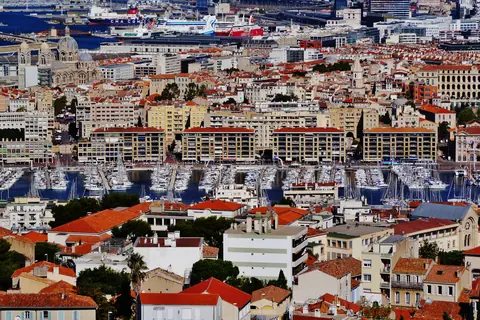
2,600년 역사를 품은 프랑스 제2의 도시이자 지중해 최대의 항만 도시. 엑상프로방스의 우아하고 정적인 학문 도시와 대비되는 거칠고 역동적인 지중해 다문화의 용광로.
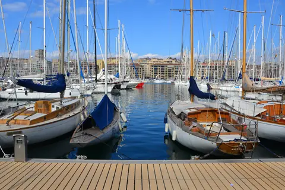
기원전 600년 포카이아 그리스인들이 닻을 내린 2,600년 역사의 천연 항구. 노먼 포스터의 대형 거울 차양(L'Ombrière), 아침 어시장, 르 파니에와 뮈셈으로 이어지는 마르세유의 심장.
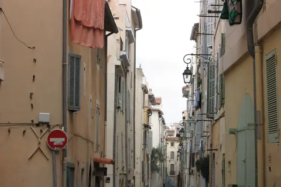
마르세유에서 가장 오래된 언덕 위 미로 마을. 파스텔톤 가옥, 감각적인 그라피티 벽화, 예술 공방, 그리고 17세기 옛 빈민 구제소 비에이 샤리테(Vieille Charité)를 품은 보헤미안 지구.
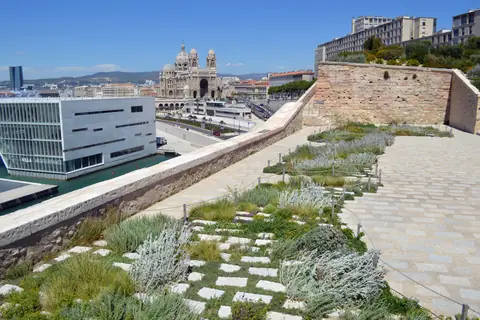
파리 외부에 설립된 프랑스 최초의 국립박물관. 건축가 루디 리치오티가 설계한 초고성능 레이스 콘크리트 외피(J4 빌딩)와 공중 보도교로 연결된 17세기 생장 요새가 바다 위에서 조화를 이루는 현대 건축의 걸작.
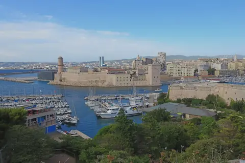
1660년 루이 14세가 마르세유 항구 입구에 지은 웅장한 해상 요새. 르네 왕의 탑, 지중해 식물원 정원, 바다와 구항구를 굽어보는 성벽 파노라마 테라스.
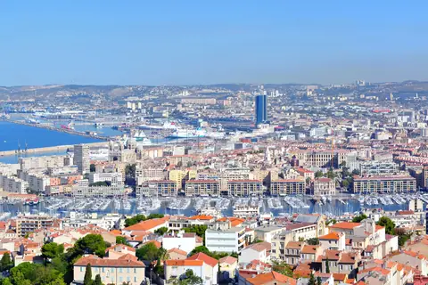
해발 154m 석회암 언덕 정상에 우뚝 선 마르세유의 상징. 뱃사람들이 '착한 어머니(La Bonne Mère)'라 부르는 11m 황금 성모상과 화려한 비잔틴 금빛 모자이크, 지중해와 도시 전체가 360도로 펼쳐지는 최고봉 파노라마.
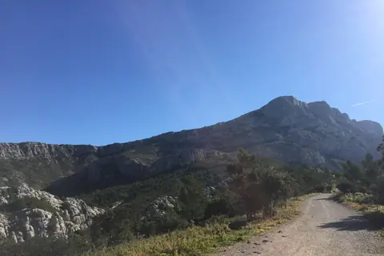
폴 세잔이 생애 후반 매일 이젤을 펴고 생트 빅투아르 산을 그렸던 언덕 위 전망 터. 세라믹 복제 화판과 실제 거대한 석회암 암벽을 한 프레임에 겹쳐 보는 야외 관람의 정수.
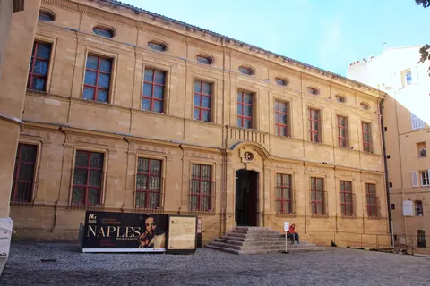
옛 몰타 기사단 수도원에 자리한 프로방스 대표 미술관. 세잔의 유화 및 수채화, 엑상 출신 화가 그라네의 작품, 자코메티·피카소를 아우르는 장 플랑크 현대 미술 컬렉션의 보고.
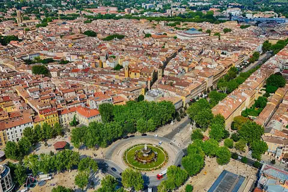
1860년 쿠르 미라보 서쪽 입구에 세워진 지름 41m의 거대한 기념비적 분수. 엑상(정의), 마르세유(상업), 아비뇽(예술)을 바라보는 3대 여신상과 8마리의 청동 사자가 지키는 엑상프로방스의 관문.
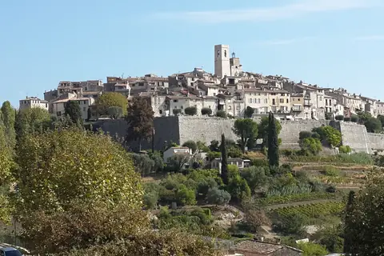
샤갈이 20년 말년을 보내며 잠든 중세 성벽 요새 마을. 현대 미술의 성지 마그 재단 미술관(Fondation Maeght), 자코메티의 야외 안뜰, 미로의 미궁 조각 정원이 언덕 숲속에 어우러진 예술의 성소.
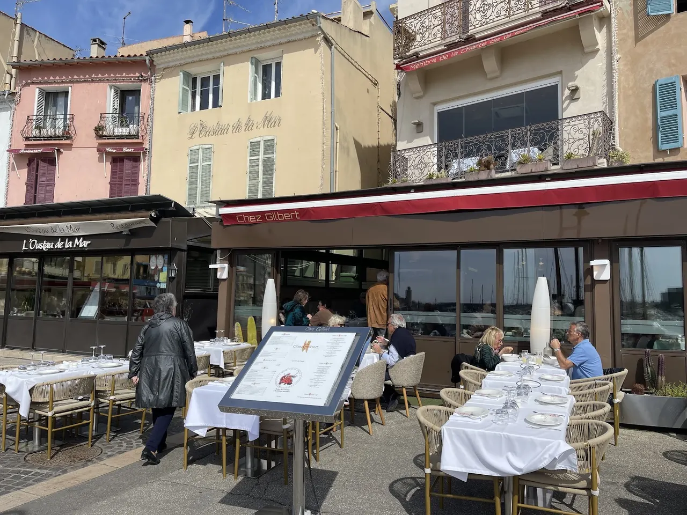
카시스 항구 앞 공인 부야베스 헌장 인증 레스토랑. 지중해 암초 생선 스튜와 카시스 화이트 와인의 정석.
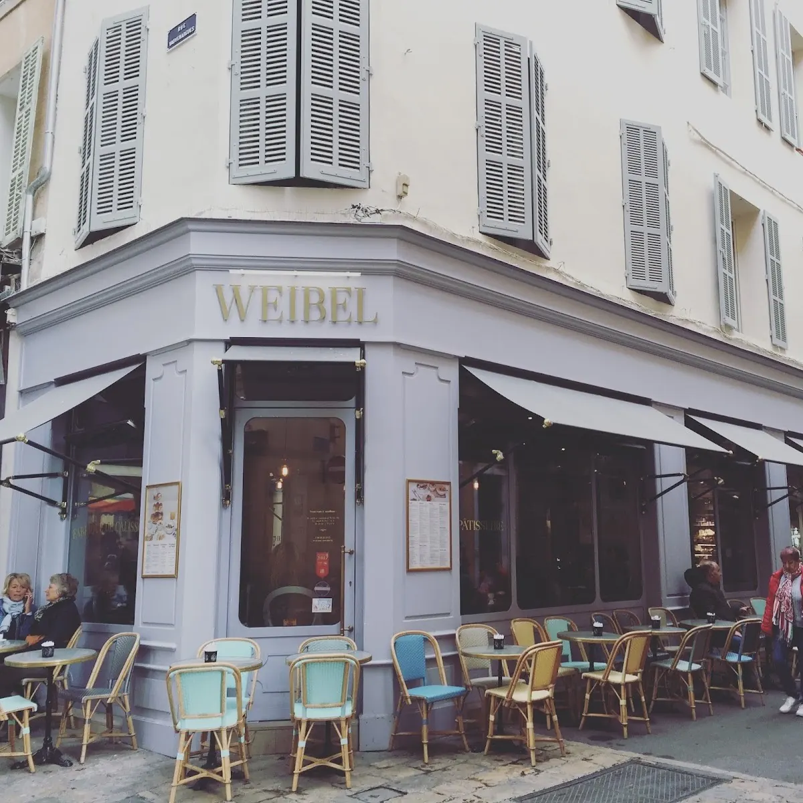
1954년부터 리셸므 시장 앞을 지켜온 엑상프로방스 대표 살롱 드 테. 정통 칼리송(Calisson)과 아침 페이스트리.
"올리브유·마늘·허브가 고기보다 앞선다."
바다와 산을 섞던 카탈루냐(Girona)와 달리, 프로방스는 채소가 주인공이다. 고기 요리도 있지만 오래 끓여 부드럽게 만드는 방식이고, 향은 허브에서 온다.
| 이름 | 정체 | 적합한 때 |
|---|---|---|
| Calisson d'Aix | 아몬드·설탕에 절인 멜론·오렌지 껍질 | 엑상 특산. 카페·선물. 하루 1–2개 |
| Tapenade | 올리브·케이퍼 페이스트 | 숙소 샌드위치 |
| Anchoïade | 안초비·마늘 소스 | 채소·가벼운 전채 |
| Aïoli | 마늘 소스와 채소·생선 정식 | 점심 또는 저녁 |
| Daube provençale | 와인에 오래 익힌 소고기 | 선선한 저녁 |
| Ratatouille | 가지·호박·토마토 | 가벼운 반찬 |
| Chèvre | 프로방스 염소치즈 | 시장 점심 |
| Melon · figue · raisin | 9월 제철 과일 | 숙소 아침·피크닉 |
| Petits farcis | 토마토·주키니 등에 고기소를 채워 구운 요리 | 저녁 전채 또는 가벼운 메인 |
아몬드 반죽 위에 아이싱을 올린 마름모꼴 과자다. 엑상 특산이고 다른 도시에서는 관광용으로만 판다.
하루 1–2개로 제한하라. 매우 달다. 선물용으로 사면 상온에서 오래 가지만, 이후 30일을 더 이동한다. 파리에서 사는 편이 운반이 짧다.
마늘 마요네즈 소스 이름이면서, 그 소스에 삶은 채소·대구·달걀·달팽이를 곁들여 내는 한 상의 이름이기도 하다.
양이 많다. 2인이 각자 시키면 남는다. 하나를 나누고 다른 요리를 하나 더 시키는 편이 낫다. 전통적으로 금요일 점심 메뉴인 식당이 있다. Day 14(9/11)는 Cassis 당일치기라 엑상 점심에는 적용하지 않는다.
Day 14는 해안이다. 내륙 프로방스 요리가 아니라 지중해 생선 요리를 먹는 날이다.
가격은 계획가(2026-08 조사) — 메뉴·구성과 요금은 현장에서 달라질 수 있다. 확정가는 방문 당일 확인한다.
| 식당 | 성격 | 추천 주문 | 계획가격 | 예약 |
|---|---|---|---|---|
| Coucou | 계절 지중해·이탈리아 | 오늘의 메뉴, 생선·채소, 파스타 | 주중 세트 약 €27, à la carte €25부터 | 권장 |
| La Brocherie | 장작불 고기·생선·프로방스 | 생선구이, 고기, 지역 채소 | 메뉴 약 €31, 일일메뉴 약 €21 | 주말 권장 |
| Aux Papillons | 창작 프렌치·특별식 | discovery 또는 tasting | 점심 €28/34, discovery €44, tasting €60 | 필수에 가까움 |
| La Kémia | 작은 접시·와인바 | 채소·생선·공유접시 | 점심메뉴 약 €25, 저녁 à la carte | 권장 |
| Le Ramus | 전통 프렌치·프로방스 | daube·생선·샐러드 | 1인 €30–60 계획 | 혼잡일 권장 |
| Chez Lulu | 점심형 동네식당 | 오늘의 요리+디저트 | 약 €17 | 점심만, 현장 가능 |
AI 자문 자료(2026-08-15)에서 추린 후보다. 가격은 미검증 참고치이고 운영일·메뉴는 방문 전 확인한다. 미슐랭 표기는 2026-08-15 guide.michelin.com 에서 직접 확인한 것만 적었다.
| 식당 | 성격 | 참고 | 참고가격 | 연락처 |
|---|---|---|---|---|
| Les Galinas – La Table Provençale | 구시가지 전통 프로방스 가정식 비스트로 | 미슐랭 빕 구르망 — 엑상 유일 (확인) | daube·양고기·계절 채소 (재확인) | 09 87 19 15 77 |
| Il Était une Fois | 조금 더 세련된 프렌치 | 시장 식재료 기반 요리 | 2인 €60–140 (재확인) | 04 42 58 78 56 |
| Le Art – Château de la Gaude | 시 외곽 샤토의 파인다이닝 | 미슐랭 별 1, 2026 (확인) | 고가 €€€€ (재확인) | 04 84 93 09 30 |
자문 자료의 판단: 이 여행에는 파리·리옹이 남아 있어 프로방스에서 미슐랭 식사를 여러 번 할 이유가 없다. 특별식 1회를 아비뇽(Pollen) 또는 생레미(La Table de Tourrel)에서 할 계획이면 Le Art 는 넣지 않아도 된다. Les Galinas 는 "전통 프로방스 한 번" 역할로 기존 14.2 후보와 겹치지 않는다.
기존 방침이 우선한다 — 부야베스는 시간·가격·양 때문에 당일치기에서 제외한다. 방침을 바꿔 "제대로 된 부야베스 한 번"을 넣는 경우에만 아래를 참고한다.
| 식당 | 성격 | 참고가격 | 연락처 |
|---|---|---|---|
| Chez Madie Les Galinettes | Vieux-Port 옆 프로방스 식당 — pieds et paquets·aïoli·생선. 기존 '가벼운 지중해식 점심' 방침과 맞는 유일한 후보 | €30–70 (재확인) | 04 91 90 40 87 |
| Restaurant Michel | 전통 부야베스 전문 | €100+/인 (재확인) | 04 91 52 64 22 |
| Chez Fonfon | Vallon des Auffes 항구 전망·생선요리 | 고가 (재확인) | 04 91 52 14 38 |
Calissoun은 화·목·토 Richelme 시장에 출점하는 공식 안내가 있다. 토요일 시장에서 소량을 맛본 뒤 선물용을 결정한다.
| 시장 | 요일·시간 | 역할 |
|---|---|---|
| Place Richelme 식품시장 | 매일 08:00–13:00 | 과일·채소·치즈·올리브·숙소식 |
| Places Comtales 식품시장 | 화·목·토 08:30–13:00 | 큰 시장일 핵심 |
| Cours Mirabeau·주변 직물/수공예 | 화·목·토 오전 | 스카프·바구니·생활용품 |
| 꽃시장 | 화·목·토 Hôtel de Ville, 수·금·일 Places Comtales | 산책·사진 |
숙소 확정 후 도보 5–10분 내 Monoprix·Carrefour City·Casino/Franprix 계열을 지도에 저장한다. Cassis 전날에는 물·과일만 추가하고, 9/12부터 냉장식품을 줄인다.
Rotonde→Cours Mirabeau→Parc Jourdan 왕복 4–6km. 차량과 보행자가 많아 속도운동보다 easy run에 적합하다.
확정 숙소는 Les Toits de Méjanes(Airbnb) · 2 Place Coimbra, entrée A, 6층. 4박(9/9 15:00 체크인 – 9/13 14:00 체크아웃). 구시가지는 걸어 다니고 차는 세워 둔다 — 시내일(9/10·9/12)에는 차를 움직이지 않는다.
엑상은 프로방스 백작령의 옛 수도였고 지금도 법원과 대학이 있다. 학생과 공무원이 사는 도시다.
실감하는 방법은 간단하다. 화·목·토 오전 시장에 가 보면 된다. 관광객용 기념품이 아니라 채소와 생선과 치즈를 산다. 그리고 오후 1시면 접는다. 관광 상권이라면 그 시간에 접지 않는다.
Aix는 라틴어 aquae(물)에서 왔다. 로마인이 온천 때문에 여기 정착했다.
이 도시에 분수가 많은 것이 그 결과다. 쿠르 미라보의 무쉬 분수는 지금도 18℃ 온천수가 나온다. 손을 대 보면 도시 이름의 어원이 확인된다.
1649–1651년에 성벽을 헐고 낸 길이다. 북쪽이 중세 구시가지(Vieil Aix), 남쪽이 17세기 계획구역(Quartier Mazarin)이다.
한 길을 사이에 두고 두 시대가 마주 본다. 북쪽은 좁고 굽은 골목, 남쪽은 곧고 넓은 격자. 바르셀로나에서 Gòtic과 Eixample을 걸었다면 같은 대비를 훨씬 작은 규모로 다시 만난다.
세잔은 셋으로 나눠 봐야 한다.
| 축 | 어디서 |
|---|---|
| 작품 | Musée Granet · 파리 오르세 |
| 작업실 | Atelier des Lauves · Jas de Bouffan |
| 풍경 | Montagne Sainte-Victoire · Bibémus |
이번 일정은 작업실과 풍경 중심이다. 작품은 상대적으로 적다. 그런데 이 여행에는 후반부가 있다 — Day 27부터 파리에 15박 한다. 아래 '대안 루트'의 오르세 항목을 참조.
| 생활권 | 성격 | 낮 | 밤 | 차량·생활 편의 | Jason·Julia 적합성 | 숙소 판단 |
|---|---|---|---|---|---|---|
| Sextius–Allées Provençales–Rotonde 북서 | 신구시가지 경계·상점·버스터미널 | 장보기·이동 매우 편리 | 중심과 가깝고 비교적 안정 | 진입·주차·Cassis 출차 우수 | 4박 생활+차량의 최적 균형 | 1순위 |
| Rotonde 남쪽–Parc Jourdan | 역·버스·주거·Mazarin 접근 | 조용하고 실용적 | 중심보다 한산 | Marseille TER·Mignet 주차 유리 | 운동·시내 균형 | 2순위 |
| Mazarin–Mignet 외곽 | 귀족건축·Granet·조용한 골목 | 산책 최고 | 조용함 | 보행구역·주차 진입 확인 필요 | 문화·산책 우선일 때 | 조건부 추천 |
| Vieil Aix 내부 | 시장·성당·카페 | 관광 분위기 최고 | 소음·계단·배달차량 | 차량진입·짐 이동 불리 | 관광에는 좋으나 4박 렌터카에는 불리 | 신중 |
| Libération/Saint-Mitre 서쪽 | 주거·아파트·가성비 | 생활편의는 양호 | 조용 | 도심보다 차량 편리 | 숙박비 절감 시 | 대안 |
| Encagnane | 현지 주거·교통 | 실용적 | 관광 분위기 약함 | 출차와 슈퍼 유리 | 아파트 품질이 압도적일 때 | 예산형 대안 |
Rotonde에서 북서쪽 5–15분, Cours Sextius 서쪽과 Allées Provençales 북쪽. 구시가지까지 도보 10–20분이면서 숙소 주차장으로 보행구역을 통과하지 않고 접근할 수 있어야 한다.
| 항목 | 가중치 | 이유 |
|---|---|---|
| 예약 가능한 주차·진입 | 20 | 렌터카를 4박 유지하며 Cassis·Luberon 이동 |
| 구시가지 도보 접근 | 20 | 시내일에는 차량을 쓰지 않음 |
| 주방·냉장고 | 15 | 아침·샌드위치 점심 운영 |
| 냉방·방음·엘리베이터 | 15 | 9월 더위와 장기여행 수면 |
| 슈퍼·빵집·시장 | 10 | 생활형 체류 |
| 세탁 또는 세탁방식 | 10 | 여행 2주차 진입 |
| 총비용·취소조건 | 10 | 주차·관광세 포함 비교 |
Julia의 수영장 접근성은 숙소평가 가중치에서 제외한다.
계획가(2026-08 조사) — 실제 결제액이 아니라 예산 설계용 범위다.
이 범위는 예약가가 아니라 계획예산이다. 2026년 9월 8–13일 실제 취소가능 총액을 동일 날짜·동일 객실조건으로 비교한다.
2026-08-19 예약 확정. DEC-039(2026-08-15)의 '프로방스 3거점 현지 결정' 방침은 Aix 에 한해 이 예약으로 끝났다. 위의 조건표와 예산 범위는 이 숙소를 고른 근거로 남긴다 — 지금부터 읽을 것은 아래 확정값이다.
| 항목 | 확정 내용 |
|---|---|
| 숙소 | Les Toits de Méjanes (Airbnb) |
| 주소 | 2 Place Coimbra, Résidence Les Toits de Méjanes, entrée A, 6e étage, 13090 Aix-en-Provence |
| 체크인 | 9/9(수) 15:00부터 — Day 12 도착 예정 16:45 |
| 체크아웃 | 9/13(일) 14:00까지 — Day 16 출발 08:00 |
| 박수 | 4박 |
| 예약 | Airbnb 확정 [CONFIRMED] |
| 주차 | 확정되지 않았다 (숙소 주차 가능 여부·요금 확인) 아래 공영주차(Rotonde·Mignet)를 예비안으로 둔다 |
도착일에 확인할 것. 건물 진입(entrée A)과 6층 승강기, 주차 가능 여부, 쓰레기 배출 요일. 차는 시내일(9/10·9/12)에는 움직이지 않는다.
늦은 귀가 — 마르세유 당일치기(Day 15)는 TER 로 19:45 귀환이다. 막차 시각을 낮에 확인하고, 늦어지면 Vallon des Auffes 를 먼저 뺀다.
Day 12 Nice-Ville 역에서 09:00 렌터카를 인수해 Saint-Paul-de-Vence·Grasse 를 거쳐 A8 로 들어온다. 16:45 체크인 예정. 도착일 저녁에 야심을 부리지 않는다 — 로통드와 쿠르 미라보 첫 산책까지가 적당하다.
9.9(수) · Day 12 · Aix-en-ProvenceDay 16 08:00 체크아웃하고 차에 짐을 싣는다. Lourmarin·Coustellet·Goult 를 거쳐 뤼베롱 농가로 간다. 트렁크 짐은 가림막으로 완전히 가린다 — 마을 주차가 짧고 잦다.
9.13(일) · Day 16 · LuberonAix에서 예외적으로 버스를 탈 때만 사용
Day 15 Marseille의 60·83번 bus와 Metro M1에 사용
Day 15 왕복 기본안; 출발 전 실제 열차와 표를 확인
Day 12에 Nice-Ville 역에서 렌터카를 받는다(DEC-A11). 그런데 엑상 구시가지에서는 차를 쓸 수 없다.
이 모순이 이 구간 교통 전략의 전부다.
| Day | 차량 |
|---|---|
| 12 | 인수 · 이동 · 숙소 주차장에 넣는다 |
| 13 | 쓰지 않는다. 전부 도보 |
| 14 | Cassis·Calanques는 차량, 현지 주차 뒤 도보·유람선 |
| 15 | Marseille는 TER·RTM, 차량은 숙소에 유지 |
| 16 | 뤼베롱 이동 |
| 항목 | 내용 |
|---|---|
| 장소 | 니스 코트다쥐르 공항 T2 |
| 완충 | 60–90분 — 서류·점검·출차 |
| 필수 확인 | 연료 종류 · 주유구 라벨 촬영 · 외관 전체 영상 |
| 경로 | 니스 → 생폴드방스 → 그라스 → 엑상 |
| 최고 위험 | 인수 지연 · 체크인 · 주차 |
08:30 출발을 지켜라. 이 날 오전에 새로운 것을 넣지 않는다.
| 항목 | 내용 |
|---|---|
| 유료 | A- (Autoroute) 대부분 |
| 무료 | N-, D- |
| 무연 95 | SP95 / Sans Plomb 95 |
| 경유 | Gazole / Diesel |
| 원형교차로 | 안에 있는 차가 우선 |
| 제한속도 | 시내 50 · 국도 80 · 고속 130 (우천 110) |
| 국제운전면허 | 필수 |
⚠ 전자 태그(télépéage) 전용 차선에 들어가지 마라. 렌터카에 태그가 없으면 후진해야 한다.
니스 → 엑상은 A8이 기본이다. 유료 구간이다.
구시가지는 보행 구역이 넓고 일방통행이 많다. 골목에 차를 넣으면 나올 수 없다.
| 원칙 | 내용 |
|---|---|
| 기본 | 숙소 주차장에 두고 도보 |
| 노상 | 파랑=유료 시간제 · 초록=거주자 우선 · 노랑=금지 |
| 시장일 | 화·목·토 오전은 중심가 진입 금지에 가깝다 |
| 야간 | 차 안에 보이는 짐을 남기지 않는다 |
Day 13이 목요일 시장일이다. 차를 뺄 생각을 하지 마라.
| 주차장 | 규모·특징 | 사용 판단 |
|---|---|---|
| Rotonde | 약 1,800면, 24시간, 승강기, 24시간 상한 €25 — 계획가(2026-08 조사) | 숙소주차 불가 시 가장 안정적 |
| Mignet | Mazarin·Cours Mirabeau 접근 | Granet·남쪽 숙소권 |
| Carnot | 동쪽 구시가지 접근 | Atelier·Cimiez 방향이 아니라 Aix 동부 |
| Pasteur | 성당·북부 구시가지 | Aquabella·Saint-Sauveur권 |
카시스는 작은 항구 마을에 방문객이 몰린다. 중심 주차가 매우 어렵다.
| 대응 | 내용 |
|---|---|
| 외곽 주차 후 도보 또는 셔틀 | 표준 방식 (셔틀 운영 확인) |
| 도착 시각 | 이를수록 유리하다 |
| 칼랑크 방면 | 차량 규제가 별도로 있다. 방문지 파일 참조 |
프랑스 주요 도시권에 저배출구역이 있다. 마르세유·엑상 광역권 해당 여부와 렌터카 스티커(Crit'Air) 부착을 인수 시 확인한다 (확인 필요).
| 구간 | 현실적 문전시간 | 방법·주의 |
|---|---|---|
| 숙소→구시가지 | 10–25분 | 시내일 차량 사용금지 |
| 숙소→Granet | 25–40분 | 큰 가방 제한 |
| 숙소→Atelier | 25–40분 | 오르막·예약 15분 전 |
| Aix→Marseille | 45–70분 | Aix Centre→Marseille Saint-Charles TER, 실제 시간표 재확인 |
| Aix→Cassis | 80–110분 | 9/11(금)은 Gorguettes 셔틀 미운행 (Gorguettes 셔틀은 9월 주말·방학·공휴일만 운행 — 평일 무효) — Presqu'île 유료주차 또는 대체안 필요 |
| Aix→Lourmarin | 70–90분 | 일요일 주차 |
| Lourmarin→농가 | 60–120분 | 정확한 주소 확정 후 재계산 |
운영 시설별 상이 — Mucem/Fort Saint-Jean 10:00–20:00, 구항 어시장 매일 07:30–12:30 · 휴관 도시 축 — 휴무 개념 없음 예약 도시 자체 예약 없음. 개별 시설(Mucem 등)은 개인 방문 예약 불필요
| 구간 | 기본안 | 실행 포인트 |
|---|---|---|
| Aix 숙소→Aix Centre역 | 도보 | 출발 20분 전 도착 |
| Aix Centre→Marseille Saint-Charles | TER | 2026-09-12 실제 열차와 승강장은 전날 SNCF Connect에서 재확인 |
| Saint-Charles→Vieux-Port | 도보 또는 Métro M1 | 혼잡한 에스컬레이터에서 휴대전화·지갑을 꺼내지 않음 |
| Vieux-Port→Notre-Dame de la Garde | RTM 60번 | 같은 비접촉 카드로 두 사람을 각각 검증 |
| Vallon des Auffes→Saint-Charles→Aix | RTM 83번·Métro M1·TER | 막차가 아니라 저녁 전 귀환편을 선택 |
TER 장애 시에만 L50 Gare routière↔Saint-Charles를 대안으로 확인한다. 차량은 주차와 도심운전 부담 때문에 기본안으로 쓰지 않는다.
Aix 일정은 도보·렌터카 중심이다. 버스가 필요한 날에만 공식 페이지에서 해당 노선 PDF를 골라 보고, 오래된 개별 노선도를 미리 저장하지 않는다.